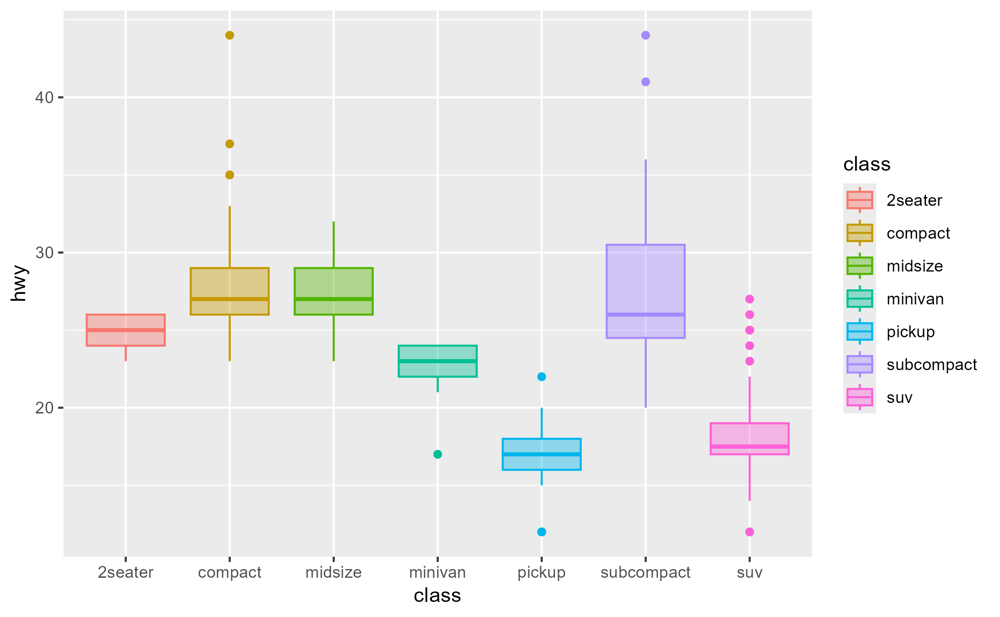

Capture a snapshot of a method's execution environment
Source:R/workflows-capture.R, R/aliases.R
ggtrace_capture_env.RdCapture a snapshot of a method's execution environment
Usage
ggtrace_capture_env(x, method, cond = 1L, at = -1L, ...)
capture_env(x, method, cond = 1L, at = -1L, ...)Arguments
- x
A ggplot object
- method
A function or a ggproto method. The ggproto method may be specified using any of the following forms:
ggproto$methodnamespace::ggproto$methodnamespace:::ggproto$method
- cond
When the method environment should be captured. Defaults to
1L.- at
Which step of the method body the environment should be captured. See
ggbody()for a list of expressions/steps in the method body.- ...
Unused.
Tracing context
When quoted expressions are passed to the cond or value argument of
workflow functions they are evaluated in a special environment which
we call the "tracing context".
The tracing context is "data-masked" (see rlang::eval_tidy()), and exposes
an internal variable called ._counter_ which increments every time a
function/method has been called by the ggplot object supplied to the x
argument of workflow functions. For example, cond = quote(._counter_ == 1L)
is evaluated as TRUE when the method is called for the first time. The
cond argument also supports numeric shorthands like cond = 1L which evaluates to
quote(._counter_ == 1L), and this is the default value of cond for
all workflow functions that only return one value (e.g., ggtrace_capture_fn()).
It is recommended to consult the output of ggtrace_inspect_n() and
ggtrace_inspect_which() to construct expressions that condition on ._counter_.
For highjack functions like ggtrace_highjack_return(), the value about to
be returned by the function/method can be accessed with returnValue() in the
value argument. By default, value is set to quote(returnValue()) which
simply evaluates to the return value, but directly computing on returnValue() to
derive a different return value for the function/method is also possible.
Examples
library(ggplot2)
# Example from https://ggplot2.tidyverse.org/reference/aes_eval.html
after_scale_plot <- ggplot(mpg, aes(class, hwy)) +
geom_boxplot(aes(colour = class, fill = after_scale(alpha(colour, 0.4))))
after_scale_plot

# `after_scale()` is resolved by `Geom$use_defaults` (at Step 6)
before_applying <- ggtrace_capture_env(
x = after_scale_plot,
method = Geom$use_defaults,
at = 1 # To be more specific, do `at = 6`
)
after_applying <- ggtrace_capture_env(
x = after_scale_plot,
method = Geom$use_defaults,
at = -1 # To be more specific, do `at = 7`
)
colnames(before_applying$data)
#> [1] "colour"
colnames(after_applying$data)
#> [1] "fill" "colour" "weight" "alpha" "shape" "linetype"
#> [7] "linewidth"
library(dplyr)
#>
#> Attaching package: 'dplyr'
#> The following objects are masked from 'package:stats':
#>
#> filter, lag
#> The following objects are masked from 'package:base':
#>
#> intersect, setdiff, setequal, union
before_applying$data %>%
select(any_of(c("colour", "fill")))
#> colour
#> 1 #F8766D
#> 2 #C49A00
#> 3 #53B400
#> 4 #00C094
#> 5 #00B6EB
#> 6 #A58AFF
#> 7 #FB61D7
after_applying$data %>%
select(any_of(c("colour", "fill")))
#> colour fill
#> 1 #F8766D #F8766D66
#> 2 #C49A00 #C49A0066
#> 3 #53B400 #53B40066
#> 4 #00C094 #00C09466
#> 5 #00B6EB #00B6EB66
#> 6 #A58AFF #A58AFF66
#> 7 #FB61D7 #FB61D766
identical(
before_applying$data %>%
select(any_of(c("colour", "fill"))) %>%
mutate(fill = alpha(colour, 0.4)), #< after_scale() logic here
after_applying$data %>%
select(any_of(c("colour", "fill")))
)
#> [1] TRUE
# Using the captured environment for further evaluation
ggbody(Geom$draw_panel)
#> [[1]]
#> `{`
#>
#> [[2]]
#> groups <- split(data, factor(data$group))
#>
#> [[3]]
#> grobs <- lapply(groups, function(group) {
#> self$draw_group(group, panel_params, coord, ...)
#> })
#>
#> [[4]]
#> ggname(snake_class(self), gTree(children = inject(gList(!!!grobs))))
#>
by_group_drawing_code <- rlang::call_args(ggbody(Geom$draw_panel)[[3]])[[2]]
by_group_drawing_code
#> lapply(groups, function(group) {
#> self$draw_group(group, panel_params, coord, ...)
#> })
draw_panel_env <- ggtrace_capture_env(
x = after_scale_plot,
method = Geom$draw_panel
)
draw_panel_env
#> <environment: 0x000001374e756e40>
boxes <- eval(by_group_drawing_code, draw_panel_env)
library(grid)
grid.newpage()
grid.draw(editGrob(boxes[[1]], vp = viewport()))